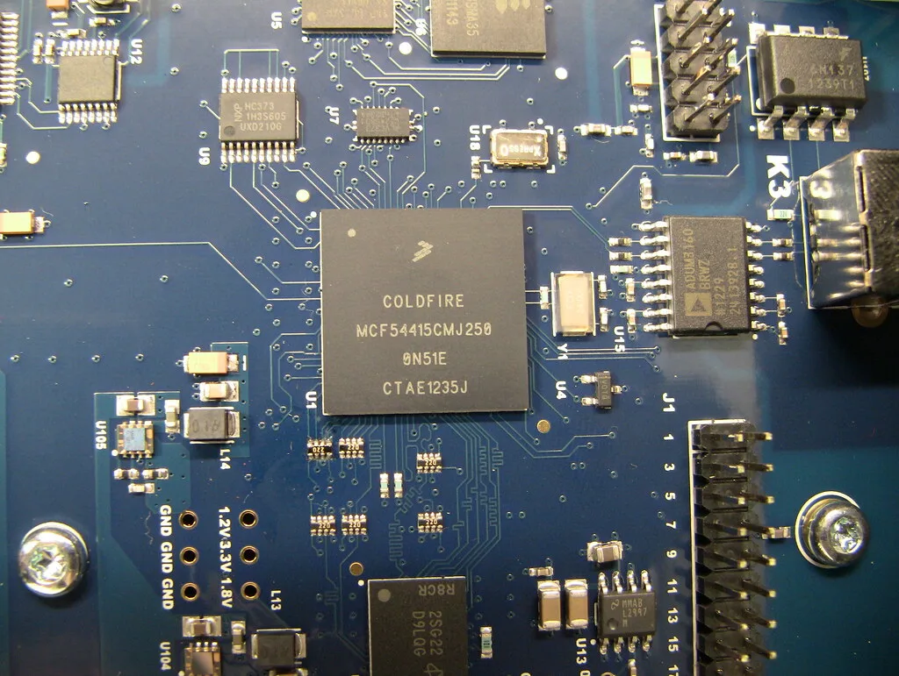
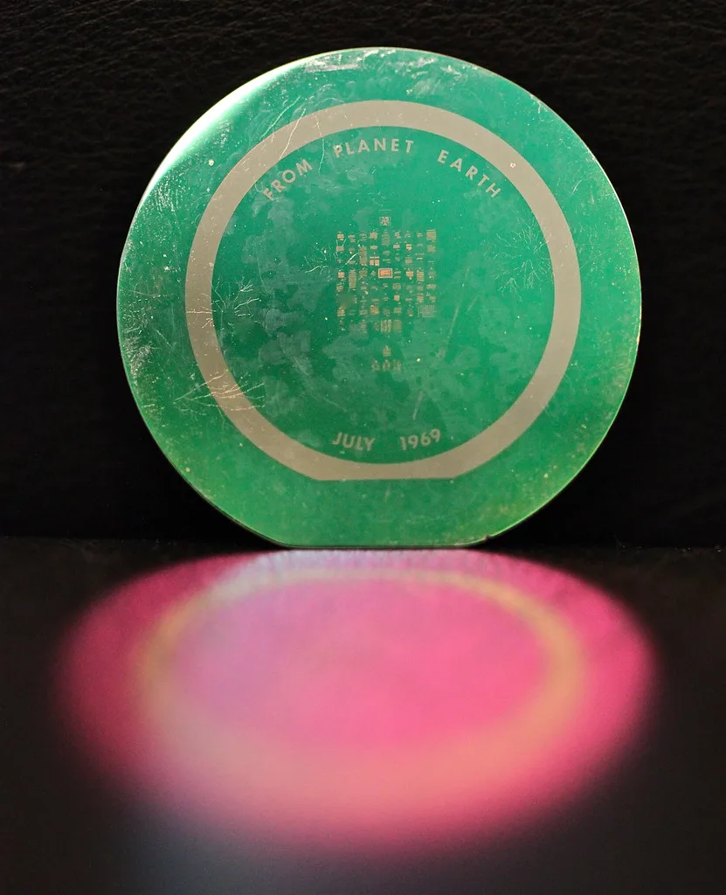

삼성전자, 400단 넘는 'V10 낸드'·차세대 'zHBM' 공개…SK하이닉스와 적층 경쟁
삼성전자가 400단이 넘는 10세대 V낸드 'V10 BV-NAND'의 개발 내용과 핵심 기술을 최근 공개했다. 이 제품은 미국에서 열린 메모리 분야 콘퍼런스 'FMS 2026'에서 '3D 및 낸드 혁신상'을 받으며 업계의 주목을 받았다. 낸드플래시는 전원이 꺼져도 데이터가 사라지지 않는 저장용 메모리로, 스마트폰과 노트북은 물론 AI 서버용 대용량 저장장치의 핵심 부품이다. 삼성전자는 세부 기술을 자사 반도체 뉴스룸을 통해 소개했다.
회사가 밝힌 사양을 보면 V10은 400개가 넘는 워드라인을 수직으로 쌓아 올린 구조에 3D 본딩 기술을 적용했다. 데이터를 주고받는 입출력 속도는 4.8Gbps 이상으로 이전 세대보다 33% 빨라졌고, 전력 소비는 25% 이상 줄었다. 같은 면적에 저장할 수 있는 데이터의 양을 뜻하는 비트 밀도는 58% 이상 높아졌다. 삼성전자는 이 기술을 바탕으로 128테라바이트(TB)급 초고용량 SSD와 차세대 PCIe 7.0 규격 SSD를 구현할 수 있다고 설명했다.

삼성전자는 같은 행사에서 차세대 3D 메모리인 'zHBM'의 초기 모형도 처음 선보였다. zHBM은 AI 연산을 담당하는 가속기 위에 메모리를 수직으로 쌓아 올리는 방식으로, 연산장치와 메모리 사이에 데이터가 오가는 거리를 줄여 대역폭과 전력 효율을 동시에 끌어올리는 데 초점을 맞췄다. AI 모델의 규모가 커질수록 메모리가 연산 성능의 발목을 잡는 이른바 '메모리 병목' 문제가 부각되고 있어, 업계에서는 이런 수직 통합형 구조를 유력한 해법 중 하나로 보고 있다.
경쟁사인 SK하이닉스도 같은 행사에서 375단 4D 낸드 웨이퍼와 제품을 전시하며 고적층 기술과 개선된 전력 대비 성능을 강조했다. 또 미국 샌디스크와 함께 개발한 새로운 규격 'HBF(고대역폭 플래시)'도 처음 공개했다. 두 회사의 전략은 방향이 다소 다르다. 삼성전자가 설계부터 생산까지 아우르는 수직 통합을 바탕으로 고객 맞춤형 메모리에 무게를 싣는 반면, SK하이닉스는 개방형 표준과 생태계 확장에 방점을 찍고 있다.

낸드플래시는 데이터를 저장하는 셀을 위로 쌓아 올리는 방식으로 용량을 키워 왔다. 층수를 100단, 200단, 300단으로 높이는 경쟁이 이어져 왔고 이번에 400단 벽이 뚫린 셈이다. 층을 더 쌓을수록 같은 넓이의 칩에 더 많은 데이터를 담을 수 있지만, 수직으로 깊은 구멍을 균일하게 뚫고 채우는 공정이 까다로워져 생산 난도와 비용이 함께 올라간다. 이 때문에 단순한 층수 경쟁을 넘어 칩 크기를 얼마나 효율적으로 줄이느냐가 기술력의 척도로 꼽힌다.
낸드플래시 시장은 한동안 공급 과잉과 가격 하락으로 어려움을 겪었지만, AI 데이터센터가 대용량·고성능 저장장치 수요를 빠르게 키우면서 분위기가 달라지고 있다. 특히 고성능 SSD와 고대역폭 메모리처럼 부가가치가 높은 제품군에서 기술 격차가 실적을 가르는 핵심 변수로 떠올랐다. 초고적층 낸드 경쟁은 그동안 HBM에 집중됐던 두 회사의 주도권 다툼이 저장용 메모리로 확대되고 있음을 보여준다.
다만 이러한 신기술이 실제 양산으로 이어지고 시장에서 자리를 잡기까지는 수율 확보와 원가 경쟁력 확보라는 과제가 남아 있다. 층수를 높일수록 공정 난도가 급격히 올라가기 때문에, 발표된 사양을 안정적으로 대량 생산할 수 있느냐가 관건이 될 전망이다. 업계에서는 AI 인프라 투자가 이어지는 한 고성능 메모리를 둘러싼 기술 경쟁이 당분간 더 치열해질 것으로 보고 있다.